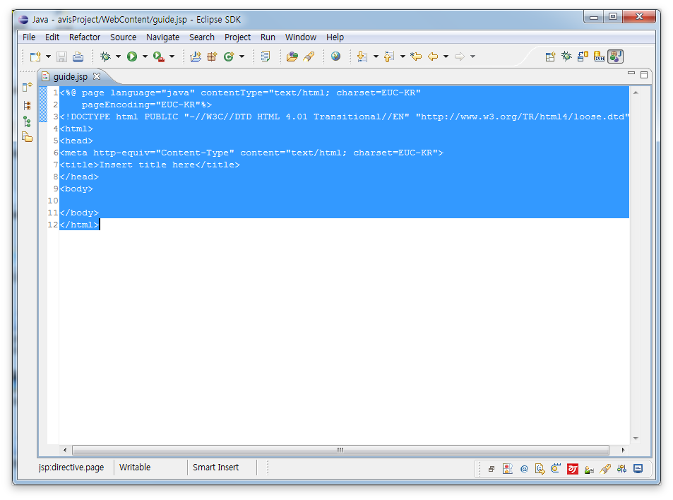
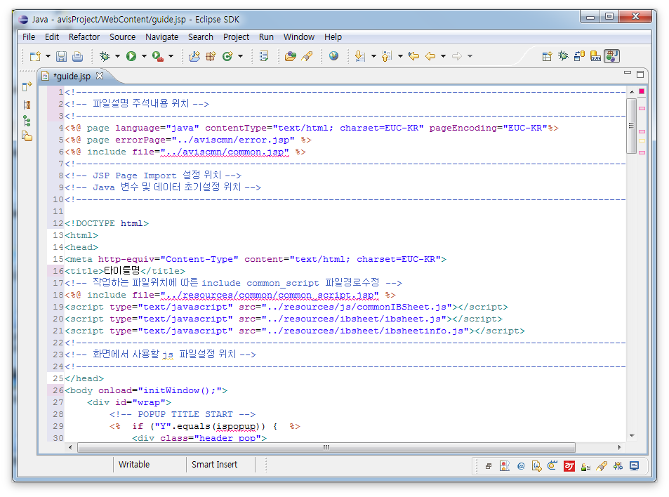

1. Eclipse 메뉴에서 Window > Preferences 환경설정을 창을 오픈한다.
2. 환경설정에서 좌측 메뉴에서 Web and XML > Jsp Files > Templates 선택 후 Templates 화면에서 Import 버튼을 클릭한다.
3. AJ렌터카 개발 가이드 우측상단에 있는 다운로드 메뉴에서 Eclipse HTML/JSP Templates.zip 파일을 다운로드 받은 후
압축을 푼 폴더에서 AJ렌터카_JSP_Templates.xml 파일을 선택한다.
4. 추가한 HTML 템플릿을 확인 후 Apply 버튼을 클릭한다. 환경설정 창을 닫는다.
5. 신규 Jsp파일에서 모든소스를 삭제한다.

6. 신규 작업할 화면 Jsp파일에서 Ctrl + Space 누르면 추가한 템플릿 옵션(신규화면 타입에 따른 HTML 구조)를 선택한다.
7. 신규 작업할 화면의 HTML 구조가 자동으로 기입된다.
